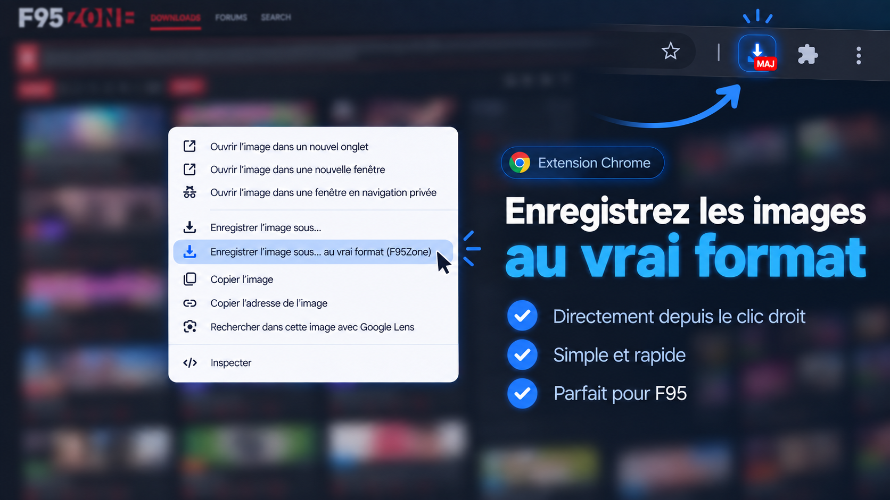
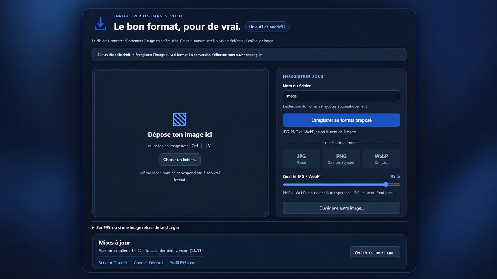

📥 Enregistrer l'image au bon format, sans prise de tête
L'extension ajoute une entrée dans le clic droit pour enregistrer une image dans le vrai format annoncé : JPG, PNG ou WebP. Pratique quand un site propose un nom trompeur ou quand le navigateur ne récupère pas directement le bon type de fichier.
🖥️ L’outil manuel
En cliquant volontairement sur l’icône de l’extension, tu peux ouvrir l’outil manuel pour déposer un fichier, coller une image avec Ctrl+V ou choisir directement le format de sortie.

✨ Points forts
Pas besoin d'ouvrir un outil à chaque fois : une seule ligne est ajoutée dans le menu contextuel.
L'extension ne se contente pas de renommer le fichier : elle reconvertit vraiment l'image en JPG, PNG ou WebP.
Si besoin, tu peux aussi ouvrir l'outil manuel pour déposer un fichier ou coller une image avec Ctrl+V.
Quand une nouvelle version est disponible, un badge MAJ apparaît sur l'icône de l'extension.
La conversion se fait localement dans le navigateur. Aucun compte, aucun abonnement, aucune pub.
Très utile pour les images de F95, y compris quand le site ou le nom du fichier ne correspond pas au format réel.
🚀 Installation & utilisation
1. Installer
- Extraire le ZIP dans un dossier que tu gardes.
- Ouvrir
chrome://extensionsouedge://extensions. - Activer le Mode développeur.
- Cliquer sur Charger l'extension non empaquetée.
- Sélectionner le dossier qui contient
manifest.json.
2. Utiliser sur un site
- Ouvrir l'image en grand si possible.
- Faire un clic droit sur l'image.
- Cliquer sur Enregistrer l'image… au vrai format.
- Choisir l'emplacement du fichier via la fenêtre Enregistrer sous.
3. Mettre à jour
- Extraire la nouvelle archive.
- Remplacer les fichiers dans le dossier existant de l'extension.
- Recharger l'extension depuis la page des extensions du navigateur.
- Si un badge MAJ est visible, la mise à jour est disponible.
🛠️ Ce que l'outil sait faire
- Conserver l'extension proposée quand elle est cohérente :
.jpg,.jpeg,.png,.webp. - Proposer un mode manuel quand l'image doit être ouverte, collée ou convertie à la main.
- Conserver la transparence avec PNG et WebP.
- Afficher un message clair en cas de blocage de récupération côté site.
- Fonctionner sur Chrome et Edge récents (Manifest V3).
❓ Questions fréquentes
Est-ce que l'extension ouvre l'outil à chaque clic ?
Non. Le mode principal se fait directement depuis le clic droit. L'outil manuel ne s'ouvre que si tu cliques volontairement sur l'icône de l'extension.
Est-ce que c'est limité à F95 ?
Non. L'extension peut aussi servir sur d'autres sites, mais elle a été pensée pour être particulièrement pratique sur F95.
Les images partent sur un serveur ?
Non. La conversion se fait localement dans le navigateur. Aucun service de conversion externe n'est utilisé.
Et si le site bloque la récupération ?
L'extension essaie de récupérer l'image avec la session du navigateur. Si ça bloque quand même, tu peux utiliser le mode manuel via copier/coller ou importer un fichier local.